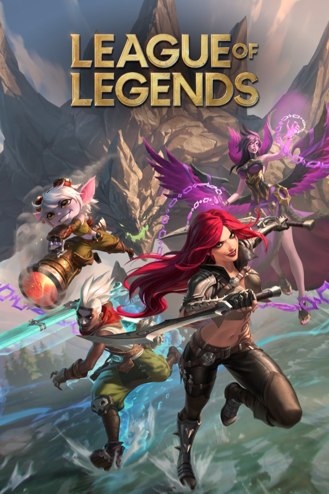

FAKER
League of Legends • Mid Laner
League of Legends • Mid Laner
Faker é considerado o maior jogador da história do League of Legends. Conhecido por sua mecânica absurda e inteligência de jogo, ele dominou o cenário mundial por anos.
Estreou pela SK Telecom T1 e rapidamente conquistou o mundo. Seus títulos mundiais e consistência o tornaram um ícone dos e-sports.

Jogadas históricas e conquistas

ZED VS ZED
Uma das jogadas mais famosas da história do League of Legends.

TÍTULO MUNDIAL
Domínio absoluto no cenário competitivo mundial.